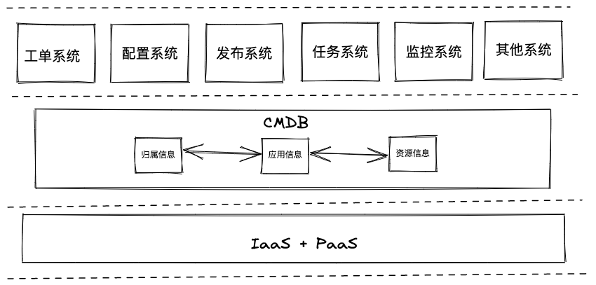

系列目录
1. 介绍
思考以下两个问题
- 当你的服务器规模为10台时，你怎么管理资源信息？
- 当你的服务器规模为100台-上万台时，你怎么管理资源信息？
第一个问题，10台服务器，可能只需要一个execl，记录一下ip地址，cpu、内核、操作系统、应用等信息就足够了。
第二个问题，当机器规模上去后，基本上就不是一个人在管理资源信息了，可能涉及到不同的部门，不同的应用，自动化，接口化等，这时候就需要用平台的方式来记录各个资源信息以及对应的关联关系了，这就是CMDB。
维基百科定义
CMDB是组织使用的ITIL术语，用于组织存储有关硬件和软件资产的信息（通常称为配置项[CI]）。CMDB提供了一种了解组织的关键资产及其关系的方法，例如信息系统，资产的上游来源或依存关系以及资产的下游目标。
用比较通俗的语言解释，CMDB是基础设施的大脑，它存储着整个基础设施上的各种信息，比如有多少台服务器、多少存储、设备的品牌、资产编号、维护人员、所属部门、服务器上运营什么操作系统、操作系统的版本、操作系统上有哪些应用、每个应用的版本等等，此外，CMDB还有一个非常重要的功能，即存储不同资源之间的依赖关系，如果某个节点出现问题了，通过CMDB，可以判断因此受到影响的业务。
2. 以应用为中心构建CMDB
传统时代
在传统时代或者叫物理时代，线上环境和非线上环境是不同团队负责的，应用可能就几个，发布周期很长。 建设运维的基础管理平台时，更多是关注物理资源信息，因此，一般我们要做事情如下：
- 把服务器、网络、IDC、机柜、存储、配件等这几大维度先定下来。
- 这些硬件的属性确定下来，比如服务器就会有 SN 序列号、IP 地址、厂商、硬件配置（如 CPU、内存、硬盘、网卡、PCIE、BIOS）、维保信息等等；网络设备如交换机也会有厂商、型号、带宽等等。
- 以上信息之间的关联关系，或者叫拓扑关系。比如服务器所在机柜，虚拟机所在的宿主机、机柜所在 IDC 等简单关系，复杂一点就会有核心交换机、汇聚交换机、接入交换机以及机柜和服务器之间的级联关系，这个就相对复杂一些。
- 在上面信息的梳理过程中肯定就会遇到一些规划问题，比如，IP 地址段的规划，xx 网段用于 DB，xx 网段用于大数据、xx 网段用于业务应用等等，再比如同步要做的还有 xx 机柜用于做虚拟化宿主机、xx 机柜只放 DB 机器等等。
以上信息梳理清楚，再将以上的信息固化到 DB 中，一个资源层面的信息管理平台就基本成型了。但是，信息固化不是目的，也没有价值，只有信息动态流转起来才有价值。接下来我们可以做的事情：
-
基于这些信息进行流程规范的建设，比如服务器的上线、下线、维修、装机等流程。同时，流程过程中状态的变更要同步管理起来。
-
拓扑关系的可视化和动态展示，比如交换机与服务器之间的级联关系、状态（正常 or 故障）的展示等，这样可以很直观的关注到资源节点的状态。
至此，从资源维度的信息梳理，以及基于这些信息的平台和流程规范建设也算是基本成型了。
云原生时代
而云的出现让大部分的公司不再需要关心上述的东西了，机房、机柜以及其他硬件相关信息都被云厂商给屏蔽掉了，我们可以按需来随时创建和删除我们的资源。只剩下虚拟出来的vpc、subnet、以及上面的各种服务ecs、rds、redis，基础设施层面我们可能只需要关心连接信息，以及相关计算资源。
而随着技术的发展，在云原生时代，涌现了容器、微服务、devops等一些技术概念，这也导致了新的问题出现：
-
按需，我们可以随时随地创建和删除资源，这样就导致了资源的信息变化很快。
-
应用非常的多，一个人可能有很多应用，一个应用可能有很多人在开发，一个应用可能有很多资源，一个资源可能关联多个应用，关系错综复杂。
-
链路复杂，应用之间还有很多依赖关系，导致排查问题变得困难。
在原云生时代，整理下来会发现只有应用本身不变的，其他都是随时在变化的，所以我们应该以应用为中心来构建CMDB。
3. CMDB上的实践
1.0 人工
在1.0时代，我们基于云平台、Jenkins、JumpServer与Consul构建了我们第一个CMDB。
-
云平台
云的出现，我们不再关心物理资源了，资源按需创建和删除，各个资源的连接信息也可以直接在云平台查到。但是，这里面没有资源跟应用和归属的关系。
-
Jenkins
基于发布的强需求，我们用jenkins构建起了应用和ec2资源的关联关系。
-
JumpServer
基于登录的强需要，通过jumpserver的节点概念，构建起了ec2和归属的关系。
-
Consul
基于consul的kv功能，存储了rds、redis等账号密码信息
上面，我们虽然通过不同的开源系统构建了CMDB，但是对于关联信息的录入和删除还是偏人工维护的，实时性和准确率还是不高。
2.0 自动化
为解决人工维护所导致的一系列问题，我们开启了自动化。
自动化的前提是规范化，我们通过标签、流程规范，用程序自动化了资源的创建、删除、归属和关联问题。
-
云平台
我们通过云平台的标签，给云上的资源加入了环境、应用、部门等信息。
-
工单系统
工单系统是信息录入和删除的入口，通过工单系统，我们可以获取到所申请资源的应用、部门等关联关系，资源创建完成后再将信息推送各个平台。
-
资产管理平台
多云的情况下，让登录云平台查询信息变得复杂，我们构建了自己的信息查询平台，可以支持多云查询，以资源出发，关联了部门，平台以及其他一些偏资源侧的信息。有点像传统时代的CMDB。
-
Owl发布配置平台
owl整合了apollo配置中心，jenkins，以应用出发，关联部门、资源、rds、redis连接信息等信息，兼顾了应用侧的CMDB，但只保留关联关系，没有资源相关的详细信息。
-
Prometheus监控平台
监控平台整合了不同云平台、以及容器相关的监控，统一了所有资源的监控，但是它有自己的标签，重监控，弱化了关联关系，导致查询监控时，通过其他平台的标签可能找不到最新的资源。
-
大禹平台
大禹平台是我们容器化的一个里程碑，实现了上述几个平台的功能，用户不再需要通过工单系统来申请自己的资源并通过owl来发布应用。
-
JumpServer
ec2登录

自动化让我们更进了一步，但也产生了一些其他问题：
- 虽然工单系统串连了整个流程，但是工单系统只解决了创建和删除的问题，但实际上还存在变更这个问题，比如应用的归属变更，资源的归属变更，这些信息还没办法做到实时同步到各个系统。
- 好几个平台都存储了关联关系，并且有相互依赖的情况，这样导致链路复杂化，很容易出现信息不一致以及其他的问题。
- 用户想查询信息，可能还是需要登录不同平台，操作复杂化。
3.0 统一化
基于自动化多平台的问题，我们重新考虑了cmdb的设计，单独抽离了一个微服务出来做关联关系和存储元数据信息，通过API的方式来支撑上层所有的平台。
设计上，参考业界上的一些案例以及对我们自身业务场景的思考，我们定义了以应用为中心的cmdb构建，处理人员–应用–资源的关系。我们给该cmdb定义了以下基调：
- 只是一个关系数据库
- 不处理业务逻辑
- 不依赖其他模块
- 提供增删改查接口
从应用出发，我们有了四大关联关系，包括应用自身的信息(后续还可以有应用和应用的关系)，应用所关联的资源，应用归属，以及对应用的权限，所有的额外的关联关系都可以通过该关系进行多次关联而呈现最完整的关系图。例如，我们要找A部门使用了多少资源，我们可以先找到归属该部门的应用，然后通过应用查询到所有关联的资源，资源所涉及到的具体信息例如cpu内存等，最后汇总到该部门。
有了统一化cmdb平台后，很多需要关系图或者基础元数据信息的系统都可以通过调用api方式接入。

统一化的价值
-
更加高效的更改关联关系
-
更加实时、清晰的关系图
-
更方便做成本的统计和成本的控制
-
更加有利于弹性扩缩容
-
告警信息更加准确，关联关系清晰，更易于排查问题，有利于稳定性平台建设
-
支持更加细粒度的关联关系图。
-
不需要多次开发，减少重复工作。
3. 结论
CMDB 是运维的基石，但是要发挥更大的价值，光有基础是不够的，我们要把更多的精力放到上层的应用和价值服务上，所以我才会讲应用才是运维的核心。我们可以看到，如果仅仅基于 CMDB 的资源信息作自动化，最多只能做出自动化的硬件资源采集、自动化装机、网络-硬件拓扑关系生成等资源层面的工具，这些工具只会在运维层面产生价值，离业务还很远，就更谈不上能给业务带来什么价值了。但是基于应用这一层去做，就可以做很多事情，比如持续集成和发布、持续交付、弹性扩缩容、稳定性平台、成本控制等等，这些事情，带来的价值就会大大不同，